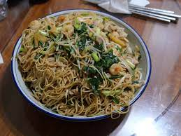
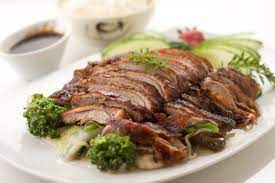

Chow Mein
Dim Sum
Pato Laqueado
Pato Xadrez
Rolê de Frango
Sushi de Atum

Compartilhe e experimente novas delícias!
Viaje para a culinária chinesa sem sair de casa! Nossa seção de Comida Chinesa oferece uma variedade de pratos autênticos e reinterpretados. Explore sabores exóticos, aprenda técnicas de preparo e mergulhe na riqueza da cozinha chinesa.
-- -- -- --AS RECEITAS ESTÃO ORGANIZADAS EM ORDEM ALFABETICA-- -- -- --
Não se preocupe, estamos aqui para ajudar a tornar sua busca por sabores inesquecíveis ainda mais fácil! Se você não encontrou a receita que procurava ou se tem uma ideia única em mente, queremos saber. Deixe-nos saber qual receita está faltando em nosso cardápio, e faremos o possível para adicioná-la. Sua sugestão pode ser a próxima estrela na nossa cozinha virtual. Entre em contato e ajude-nos a criar o repertório perfeito para todos os gostos! 🌟✨